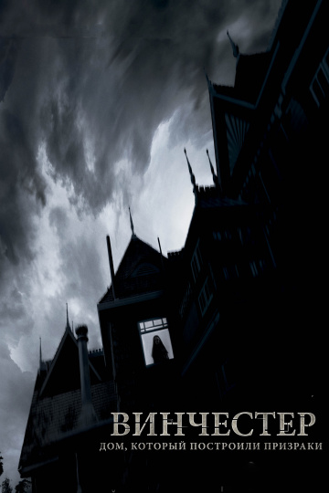
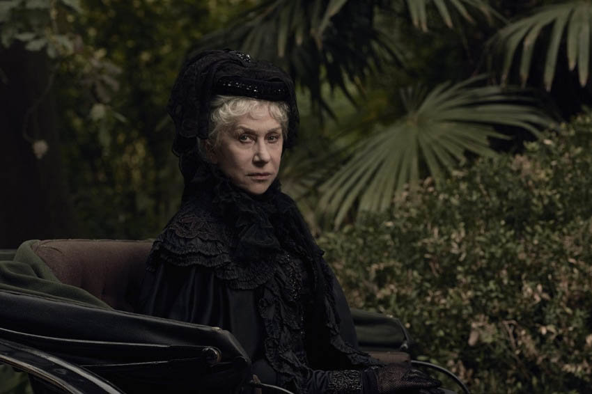

| Год | 2018 |
| Страна | США |
| Hазвание | «Винчестер. Дом, который построили призраки» |
| Режиссер | Майкл Спириг, Питер Спириг |
| Бюджет | $19000000 |
| Описание | Братья-режиссеры Майкл и Питер Спириг («Патруль времени», «Пила 8») решили снять свой хоррор о доме с привидениями, вдохновившись реальной историей Сары Винчестер – невестки изобретателя знаменитой винтовки Оливера Винчестера. Дом, о котором идет речь в фильме, находится неподалеку от Сан-Франциско и открыт для всех любителей пощекотать нервы. Юристы оружейной компании «Винчестер» обращаются к психиатру Эрику Прайсу (Джейсон Кларк) и просят его проверить психическое состояние владелицы контрольного пакета акций Сары Винчестер (Хелен Миррен). В компании опасаются за рассудок безутешной вдовы, а заодно за ее способность управлять фабриками. В том, что такая состоятельная женщина живет в огромном особняке, нет ничего странного, но в нем никогда не прекращается стройка: Сара Винчестер не жалеет никаких средств на то, чтобы в ее доме появлялись все новые запутанные коридоры и бесконечно воздвигались новые стены. По прибытии в особняк Винчестеров доктору Прайсу предстоит узнать истинную причину страсти хозяйки дома к перепланировкам. |
|  |  |